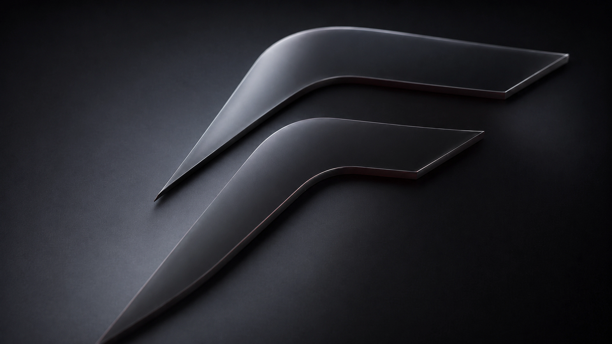
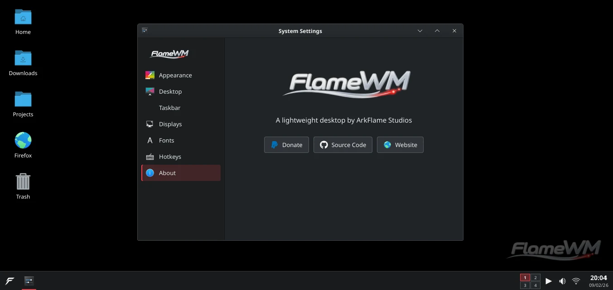

Familiar from day one.
Windows, workspaces, and controls where you expect them.

A familiar Linux desktop, built in Rust. Less overhead. More room to work.
Made in Argentina
A familiar workflow, sensible defaults, and no unnecessary layers.
Windows, workspaces, and controls where you expect them.
Move, snap, and switch windows without extra steps.
A focused shell with minimal background work.
Keep projects apart with virtual desktops.
Change appearance, wallpaper, and taskbar settings.
Follow the code and development on GitHub.
The taskbar, settings, and desktop in detail.

Reported memory figures, shown together with their measurement types.
Nine desktops and window managers. Values are labeled by measurement type.
FlameWM: reported WM RSS · IceWM: Q4OS system idle · Others: Ubuntu system idle
An independent Rust desktop. Open source and actively developed.
FOLLOW DEVELOPMENT ↗github.com/ArkFlame/flamewmExplore the layout and interactions in your browser. This is a prototype, not the native desktop.
OPEN INTERACTIVE DEMO ↗